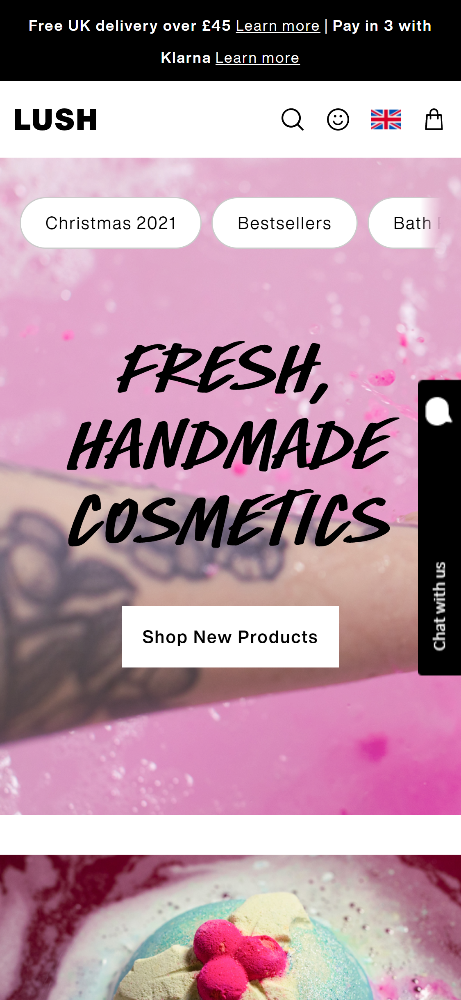

DESIGN PRINCIPLES DOCUMENT
Grant Boreham
HICK'S LAW
Takealot
www.takealot.comBy placing their products into categories it always the customer to make easier decisions on what they want to buy instead of feeling overwhelmed with choices.
WHITE SPACE & CLEAN DESIGN
Elements are well spaced, they website does not feel over crowded even though there are many aspects to the website. A user can easily navigate through the website without feeling cramped.
P.A.R.C: CONTRAST
LUSH
www.lush.com Excellent use of complimenting colors. Typography is easy to read, even over images Heirarchy of text makes it easy to notice the different "call to action" buttons.